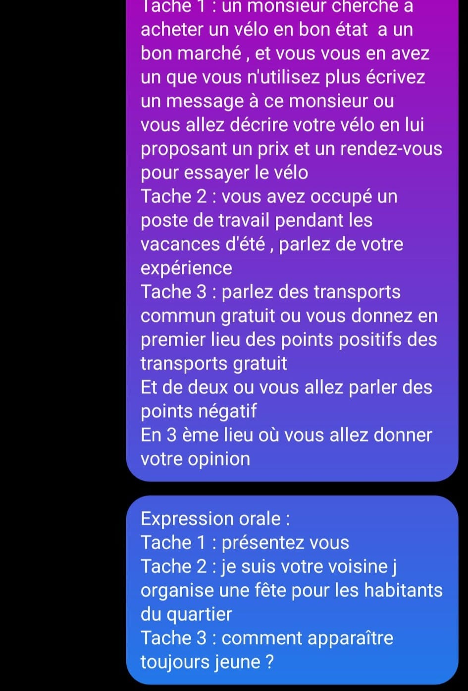

Tunisie : 11 Mai 2022
EO
T1 présentation
T2 votre voisin organise une fête du quartier
T3 les jeux vidéo sont dangereux pour les jeunes
Tunisie : 11 Mai 2022
EO
T1 présentation
T2 votre voisin organise une fête du quartier
T3 les jeux vidéo sont dangereux pour les jeunes
Bonjour TCF Canada 09 Mai 2022 Bamako
EE
Tache 1
Votre entreprise viens de déménager, décrire le nouveau local à votre ami
Tache 2 : vous venez de participer à une semaine sans voiture organiser par votre ville écrire un blog
Tache 3 : vêtements de marque
EO
Tâche 1 : présentez vous
Tache 2 : je suis un agent du réseau de transport commun de la ville posez moi des questions
Tache 3 : faut il vivre dans un pays pour connaitre la culture pour ou contre
Tcf canada passé à l'IFL le 6 Mai 2022
EO Tâche2: ton ami t'invite à l'ouverture d'un restaurant, pose lui des questions.
T3 le temps passé devant la télé est un temps perdu ?
EE: T1 ton ami te demande à propos d'une salle de sport dans votre quartier.
T2 raconte un événement passé duquel tu te souviens (fête, anniversaire...)
T3 la lecture des enfants doit être par obligation ?
Sidi Bel Abbès : 06 Mai 2022
EE
tache1 vendre son vélo
tache2 job d'été et
tache 3 gratuite des transports
EO
tache 2 agence de voyage
Tache 3 la télévision
sujets du tcf passé 22 Avril 2022 à dubai:
EE
T1: un journal cherche des volontaires pour donner leur témoignage sur une région dans laquelle ils y sont installés. Tu veux y participer écris un e mail pour leur faire part de ton intérêt.
T2: tu a assistéau concert de ton artist préféré, raconte sur ton blog
T3: les jeux vidéos pour les enfants pour ou contre
EO :
T2: ta voisine s’est inscrite à la piscine municipale et vous êtes intéressée aussi, posez lui des questions.
T3 : le tourisme.
Constantine 19 Avril 2022 :

Bejaïa 18 Avril 2022 :
Ee :
t1) écrire sur une émission télé, votre participation, vous devez choisir une émission et parler de cette expérience sur un site internet
t2) ton amie t'envoie un message elle souhaite visiter un pays, tu lui répond en lui suggérant un pays de ton choix (ville, musée, etc)
t3) les quotas de travail entre homme et femme (en gros ils nous ont donner deux textes, un sur les pays qui font travailler la femme, comme quoi elle est discriminer et qu'il faut faire travailler les femmes voir plus que les hommes; l'autre texte sur le travail c'est par compétence et non par sex) donc à vous de réaliser deux texte, un p'tit résumé des deux textes, et l'autre sur ton avis sur le sujet.
EO :
t1) présentation, comme d'hab quoi !
t2) je suis une agence de voyages, à vous de me poser des questions sur les lieux, les tarifs, le programme, etc.
t3) tu argumente sur ce sujet : internet aide-elle pour éduqué les enfants